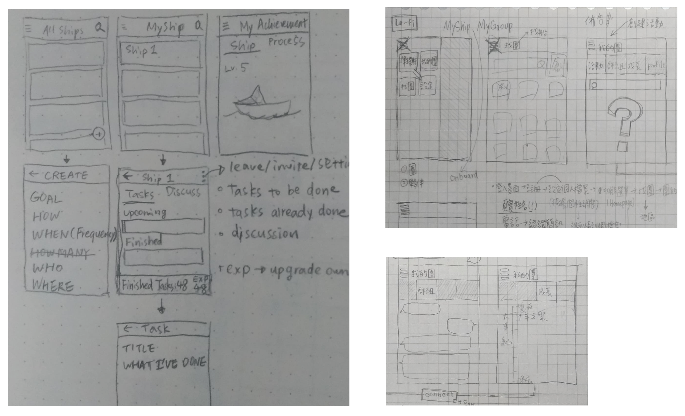

MyShip
Connecting Newcomers to Locals
Project Aim
This project aims to clarify the disconnection between newcomers and the others, and suggested a design solution to help them initiate their new social networks.
Type
User Experience Design Coursework
Role
I was responsible for literature review, interviews, wireframe and redesigned the app interface.
Team
4 members
Duration
3 months, Oct 2014 - Jan 2015
Design Process

Problem Statement
Many people in Taiwan crowded to the capital city, Taipei, seeking for better job opportunities.
- Why these newcomers after staying for few years still felt disconnected from others?
- Why it was difficult for them to build close and long-term friendships with locals?
Literature Review
The Cause of the Rural-Urban Flow: Possible differences in expected earnings between urban and rural areas. (Harris & Todaro, 1970)
The Structure of Friendship: Surface Structure: symmetrical reciprocity
Deep Structure: social exchanges which differ from situations. (WW Hartup, N Stevens, 1997)
User Research: Interview
Interview Questions:
- The motivation of coming to Taipei
- The differences between hometowns and Taipei
- The difficulties they faced with
Interviewees:
- 3 newcomers who settled in Taipei for less than 2 years.
- 3 fresh graduates who lived in Taipei during their whole lives.
Key Findings from Affinity Diagram
- They came to Taipei seeking for better achievements.
- They lost the sense of belonging at the beginning and had fewer friends in Taipei.
- They did not have adequate access to establish new friendships.
- The existence of dating applications were used for finding a mate or sex purposes, but not for close friendships.
Design Goal
The target users could acquaint and interact with others, thus build a close and long-term friendships to gain the sense of belonging.
Initial Design
Both newcomers and locals wanted better achievements. They had goals to learn new skills or cultivate habits but failed.
The idea came from the structure of friendships which requires social exchange and symmetrical reciprocity. The mobile application “MyShip” provided a platform gathering people with things in common.
Key Features
Join small groups sharing the same goals to build friendships.
- Short-term Multi-Sharing
- Long-term Hobby-building
Wireframe
Evaluation
Based on the information architecture, we developed a low-fidelity prototype, then went through an internal heuristic evaluation.
We made 4 changes:
1. Part of our interface design may confuse our target users.
2. The detailed functions should be arranged into appropriate categories.
3. The function for short-term friendships were removed because it may perplex the users and it was not directly related to our design goal.
4. A mission list was added to encourage users to generate their first interaction and complete their shared goals.
Information Architecture

APP Overview